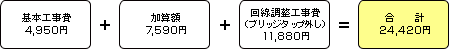

回線調整
通信速度の低下が発生した場合や、充分な速度が確保できない場合または通信断が発生する場合に、お客さまからの要望により回線収容替え,ブリッジタップ外しまたは保安器の変更を実施します。
| ※ | 回線調整の実施については、一定の速度を保証するものではありませんので、速度の向上、事象の改善がされない場合もあります。 |
（1）回線収容替え
他のサービスとの相互干渉等により通信速度の低下が発生した場合において、現在ご利用されているメタリックケーブルとは別のメタリックケーブルに切り替える工事を行ないます。
【工事料金】
（2）ブリッジタップ外し
NTT西日本収容ビルからお客さま宅への電話線の途中にある分岐装置（ブリッジタップ）の影響により、十分な速度が確保できない場合には、未使用の分岐装置（ブリッジタップ）を外す工事を行ないます。
【工事料金】

（3）保安器の変更
保安器の変更とは、一部保安器によって発生する可能性がある事象（フレッツ・ADSLを利用中に、電話が着信すると通信速度の低下または一時的にADSLの接続が切れてしまうことがある）を発生しにくくする工事です。
【工事料金】